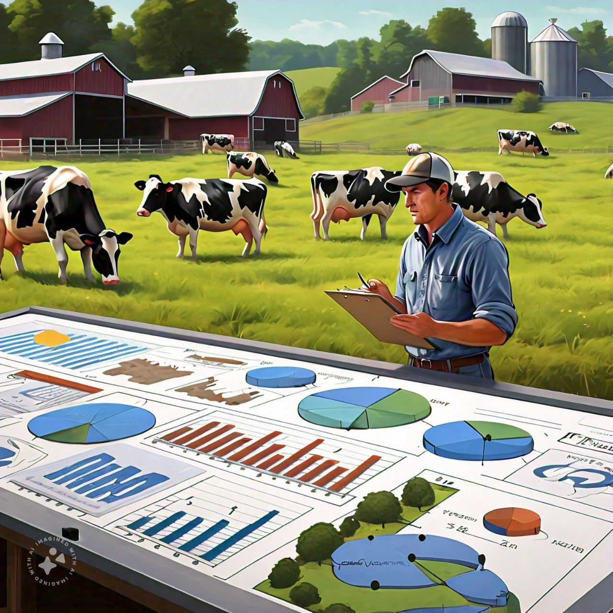

About Me
My name is Sumair Rasi, and I am an AI/ML Engineer and Team Lead with 3 years of professional
experience building and deploying scalable intelligent systems — spanning NLP, Deep Learning,
Generative AI, RAG pipelines, Agentic AI, and MLOps.
I have a proven track record of leading cross-functional engineering teams, managing full project
lifecycles, and delivering production-ready AI solutions. Currently pursuing my Master's in
Industrial Data Science at Montanuniversität Leoben, Austria, and actively seeking a part-time
IT role to apply my hands-on expertise in the local market.
Skills
Recent Work
AI-powered platform for interactive learning using LangChain agents, Redis, Wikipedia, and ArXiv. Teachers upload papers; students explore through dynamic Q&A.
View on GitHubMediGraph is a conversational medical assistant that leverages Large Language Models and a Neo4j knowledge graph to help users better understand their symptoms. Users can describe their symptoms in natural language, and the system analyzes the information to identify possible related medical conditions, explain those conditions, provide educational guidance, and recommend the most appropriate healthcare specialist to consult.
View on GitHubDocPilot AI is an intelligent document processing platform that automates financial document analysis using a multi-agent architecture. The platform streamlines document intake, intelligent routing, information extraction, and structured report generation, significantly reducing manual effort and improving processing efficiency.
View on GitHubML system detecting workplace mental health challenges. Provides early warnings and personalized interventions. Deployed end-to-end on Amazon EC2 with S3 storage.
View on GitHub
Uses SARIMAX to forecast dairy farm production from historical data and external factors. Built end-to-end with CI/CD via GitHub Actions.
View on GitHubFine-tuned DistilBERT on a Kaggle Twitter dataset to classify sentiments. Implemented end-to-end with advanced NLP and deployed with Docker.
View on GitHubEducation
Core Coursework: Algorithms & Data Structures, Mathematics, Statistics, Machine Learning, Database Design.